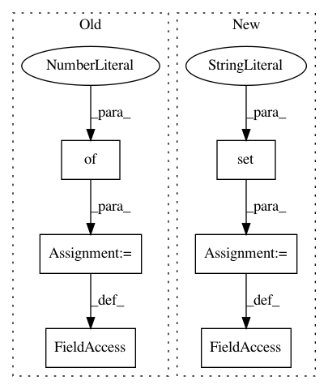

e249d9c0bd820b8b5d01ff44e2506c050e6a5a5b,ants/registration/reflect_image.py,,,#,3
Before Change
from .apply_transforms import apply_transforms
_reflection_matrix_dict = {
"unsigned char": {
2: lib.reflectionMatrixUC2,
3: lib.reflectionMatrixUC3
},
"unsigned int": {
2: lib.reflectionMatrixUI2,
3: lib.reflectionMatrixUI3
},
"float": {
2: lib.reflectionMatrixF2,
3: lib.reflectionMatrixF3
},
"double": {
2: lib.reflectionMatrixD2,
3: lib.reflectionMatrixD3
}
}
def reflect_image(img, axis=None, tx=None, metric="mattes"):
Reflect an image along an axis
After Change
from .apply_transforms import apply_transforms
_supported_ptypes = {"unsigned char", "unsigned int", "float", "double"}
_short_ptype_map = {"unsigned char" : "UC",
"unsigned int": "UI",
"float": "F",
"double" : "D"}
// pick up lib.reflectionMatrix functions
_reflection_matrix_dict = {}
for ndim in {2,3}:
_reflection_matrix_dict[ndim] = {}
for d1 in _supported_ptypes:
d1a = _short_ptype_map[d1]
_reflection_matrix_dict[ndim][d1] = "reflectionMatrix%s%i"%(d1a,ndim)
def reflect_image(img, axis=None, tx=None, metric="mattes"):
Reflect an image along an axis
In pattern: SUPERPATTERN
Frequency: 3
Non-data size: 6
Instances
Project Name: ANTsX/ANTsPy
Commit Name: e249d9c0bd820b8b5d01ff44e2506c050e6a5a5b
Time: 2017-09-19
Author: ncullen.th@dartmouth.edu
File Name: ants/registration/reflect_image.py
Class Name:
Method Name:
Project Name: markovmodel/PyEMMA
Commit Name: 6379ad6fad9cd3c944390538faf945fdc8662b35
Time: 2017-12-15
Author: m.scherer@fu-berlin.de
File Name: pyemma/_base/serialization/tests/_test_classes.py
Class Name: test_cls_v3
Method Name: test_cls_v3_1
Project Name: markovmodel/PyEMMA
Commit Name: 6379ad6fad9cd3c944390538faf945fdc8662b35
Time: 2017-12-15
Author: m.scherer@fu-berlin.de
File Name: pyemma/_base/serialization/tests/_test_classes.py
Class Name: test_cls_v2
Method Name: test_cls_v2_1